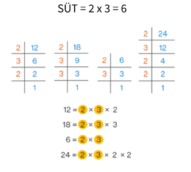

Suurim ÜhisTegur ehk SÜT

Antud arvude suurimaks ühisteguriks nimetatakse suurimat arvu, millega kõik antud arvud jaguvad.
Suurime ühisteguri leidmiseks tuleb antud arv lahutada algteguriteks ja leida nende arvude kõikide ühiste algtegurite korrutis. Suurimat ühistegurit kasutatakse murdude taandamisel.
Suurima ühisteguri leidmine jäägi abil, rekursiivne lahendus
def syt (a, b):
if b == 0:
return a
else:
return syt (b, a%b)
print(str(syt(10, 2)))